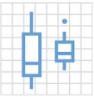
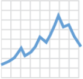
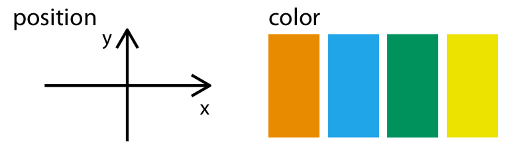

Welcome
These slides available at: https://arcus.github.io/first_steps_in_r_rstudio_skills_series/session_2.html
- Use keyboard arrow keys to
- advance ( → ) and
- go back ( ← )
- Type “s” to see speaker notes
- Type “?” to see other keyboard shortcuts
About Arcus / Your Presenter
Arcus is an initiative by the Research Institute aimed at promoting data discovery and reuse and increasing research reproducibility.
- Arcus app: https://arcus.chop.edu
- Arcus Sharepoint site: https://chop365.sharepoint.com/sites/Arcus
Among the many teams in Arcus, I represent Arcus Education!


Arcus Education

Arcus education provides data science training to researchers …
(and often this is useful to non-researchers too!).
https://arcus.chop.edu/i-want-to/arcus-education
Email us! arcus-education@chop.edu
First Steps in R and RStudio
Arcus Education provides “Skills Series” for the entire CHOP community.
This Skills Series is a 5-session series aimed at helping you take your first steps in R and RStudio!
- Session 1: Review and Setup
- Session 2: Projects and File Ingestion
- Session 3: Exploring Data Visually, Using ggplot2
- Session 4: Selecting Data Using dplyr
- Session 5: Putting it All Together: Communicating
Session 3 Itinerary
Exploring Data Visually, Using ggplot2
- ggplot2 syntax
- Mapping Aesthetics
- Setting Visuals
- Color Palettes
Goals:
- Describe what an “aesthetic mapping” is in ggplot2
- Create a simple ggplot2 data visualization
- Add a label (like a title or an x-axis label) to a plot in ggplot2
ggplot2

The “grammar” of ggplot
- Step 1: Pick a tidy data frame to pass to
ggplotas an argument
ggplot(data = cirrhosis_study)
- Step 2: Pick a “geom” function
- Step 3: Write aesthetic mappings
Step 1: Tidy Data
- Columns measure just one variable and don’t have any merging or combining
- Rows each represent just one observation and don’t include variables
- There’s no merging of cells that make names or values shared
Example: Untidy vs Tidy
Untidy
|
Measure 1 |
Measure 2 |
Measure 3 |
Measure 4 | |||||
|
pre |
post |
pre |
post |
pre |
post |
pre |
post | |
|
Team 1 (n=6m, 14f) |
||||||||
|
Team 2 (n=12m,8f) |
||||||||
|
Team 3 (n=10m, 10f) |
||||||||
|
Team 4 (n=5m, 15f) |
||||||||
Example: Untidy vs Tidy
Untidy
|
Measure 1 |
Measure 2 |
Measure 3 |
Measure 4 | |||||
|
pre |
post |
pre |
post |
pre |
post |
pre |
post | |
|
Team 1 (n=6m, 14f) |
||||||||
|
Team 2 (n=12m,8f) |
||||||||
|
Team 3 (n=10m, 10f) |
||||||||
|
Team 4 (n=5m, 15f) |
||||||||
Tidy
|
Intervention Stage |
N Males |
N Females |
Measure 1 |
Measure 2 |
Measure 3 |
Measure 4 |
|
|
Team 1 |
Pre | 6 | 14 | ||||
|
Team 1 |
Post | 6 | 14 | ||||
|
Team 2 |
Pre | 12 | 8 | ||||
|
Team 2 |
Post | 12 | 8 | ||||
|
Team 3 |
Pre | 10 | 10 | ||||
|
Team 3 |
Post | 10 | 10 | ||||
|
Team 4 |
Pre | 5 | 15 | ||||
|
Team 4 |
Post | 5 | 15 |
Tidy, or Not Tidy?
| ID_Arm | N_Days | Status | Age | Sex | AHS Status |
|---|---|---|---|---|---|
| 1_D | 400 | D | 21464 | F | Y/Y/Y |
| 2_D | 4500 | C | 20617 | F | N/Y/Y |
| 3_D | 1012 | D | 25594 | M | N/N/N |
| 4_D | 1925 | D | 19994 | F | N/Y/Y |
| 5_P | 1504 | CL | 13918 | F | N/Y/Y |
| 6_P | 2503 | D | 24201 | F | N/Y/N |
| 7_P | 1832 | C | 20284 | F | N/Y/N |
| 8_P | 2466 | D | 19379 | F | N/N/N |
| 9_D | 2400 | D | 15526 | F | N/N/Y |
| 10_P | 51 | D | 25772 | F | Y/N/Y |
| 11_P | 3762 | D | 19619 | F | N/Y/Y |
| 12_P | 304 | D | 21600 | F | N/N/Y |
| 13_P | 3577 | C | 16688 | F | N/N/N |
| 14_P | 1217 | D | 20535 | M | Y/Y/N |
| 15_D | 3584 | D | 23612 | F | N/N/N |
| 16_P | 3672 | C | 14772 | F | N/N/N |
| 17_P | 769 | D | 19060 | F | N/Y/N |
| 18_D | 131 | D | 19698 | F | N/Y/Y |
Tidy, or Not Tidy?
| ID | N_Days | Status | Drug | Age | Sex | Ascites | Hepatomegaly | Spiders |
|---|---|---|---|---|---|---|---|---|
| 1 | 400 | D | D-penicillamine | 21464 | F | Y | Y | Y |
| 2 | 4500 | C | D-penicillamine | 20617 | F | N | Y | Y |
| 3 | 1012 | D | D-penicillamine | 25594 | M | N | N | N |
| 4 | 1925 | D | D-penicillamine | 19994 | F | N | Y | Y |
| 5 | 1504 | CL | Placebo | 13918 | F | N | Y | Y |
| 6 | 2503 | D | Placebo | 24201 | F | N | Y | N |
| 7 | 1832 | C | Placebo | 20284 | F | N | Y | N |
| 8 | 2466 | D | Placebo | 19379 | F | N | N | N |
| 9 | 2400 | D | D-penicillamine | 15526 | F | N | N | Y |
| 10 | 51 | D | Placebo | 25772 | F | Y | N | Y |
| 11 | 3762 | D | Placebo | 19619 | F | N | Y | Y |
| 12 | 304 | D | Placebo | 21600 | F | N | N | Y |
| 13 | 3577 | C | Placebo | 16688 | F | N | N | N |
| 14 | 1217 | D | Placebo | 20535 | M | Y | Y | N |
| 15 | 3584 | D | D-penicillamine | 23612 | F | N | N | N |
| 16 | 3672 | C | Placebo | 14772 | F | N | N | N |
| 17 | 769 | D | Placebo | 19060 | F | N | Y | N |
| 18 | 131 | D | D-penicillamine | 19698 | F | N | Y | Y |
The “grammar” of ggplot
- Step 1: Pick a tidy data frame to pass to
ggplotas an argument
ggplot(data = cirrhosis_study)
- Step 2: Pick a “geom” function
- Step 3: Write aesthetic mappings
Step 2: Pick a “geom” function
There are lots of ways to depict data geometrically:

geom_histogram()

geom_dotplot()

geom_bar()

geom_boxplot()

geom_point()

geom_line()
The “grammar” of ggplot
- Step 1: Pick a tidy data frame to pass to
ggplotas an argument
ggplot(data = cirrhosis_study) +
- Step 2: Pick a “geom” function
geom_histogram()
- Step 3: Write aesthetic mappings
Step 3: Aesthetic Mappings
Aesthetic mappings connect columns to visible attributes.
Aesthetic Mappings
| Spiders | Cholesterol | Albumin |
|---|---|---|
| Y | 261 | 2.6 |
| Y | 302 | 4.14 |
| N | 176 | 3.48 |
| Y | 244 | 2.54 |
| Y | 279 | 3.53 |
| N | 248 | 3.98 |
| N | 322 | 4.09 |
Spiders: •• (Color)
Cholesterol: ↔︎ (X axis)
Albumin: ↕ (Y axis)
Aesthetic Mappings
| Spiders | Cholesterol | Albumin |
|---|---|---|
| Y | 261 | 2.6 |
| Y | 302 | 4.14 |
| N | 176 | 3.48 |
| Y | 244 | 2.54 |
| Y | 279 | 3.53 |
| N | 248 | 3.98 |
| N | 322 | 4.09 |
Spiders: •• (Color)
Cholesterol: ↔︎ (X axis)
Albumin: ↕ (Y axis)
mapping = aes(x = Cholesterol,
y = Albumin,
color = Spiders)
Participation Time!
In addition to x/y position and color, what other aesthetic mappings can you think of?
(Hint: things that don’t change when the data changes, like the background color of a graph or the font or title of a graph, aren’t mappings).
Type your answers in the chat!
The “grammar” of ggplot
- Step 1: Pick a tidy data frame to pass to
ggplotas an argument
ggplot(data = cirrhosis_study) +
- Step 2: Pick a “geom” function
geom_histogram(aes (x = Cholesterol))
- Step 3: Write aesthetic mappings
(you can put these in either of the 2 lines above…)
Your Turn!
- Go to https://posit.cloud and log in.
- Find your First Steps in R and RStudio project and open it
- In the file browser (lower right), navigate to Exercises
- Open session_3_exercise.qmd, and start reading and working in it!
- If you save this file, save it with your initials at the end (rename it).
- If you get stuck, there’s a solutions file in the “solutions” folder, or jump into chat!
- I’d love for everyone to work quietly for around 10 minutes, and then I’ll demo “Your Turn” 1-6.
- You can do as many as you like: 1-6 will get you through today’s goals, 7-14 are “bonus content”!
- I’ll stop us all for a couple of closing slides and for Q&A as we get close to the end of the hour.
Summary of Today
Today, you:
- Learned about the grammar of graphics
- Evaluated whether data was “tidy” or not
- Learned about mapping data to visual aesthetics
- Created some simple (and some not-so-simple) data visualizations
- Labeled your data visualizations
- Probably worked with some error messages and maybe some help files
That’s a lot! Give yourselves a round of applause.
Q&A / Was This Effective?
We like to measure our effectiveness (and analyze it in R!)
Goals:
- Describe what an “aesthetic mapping” is in ggplot2
- Create a simple ggplot2 data visualization
- Add a label (like a title or an x-axis label) to a plot in ggplot2
Next Session
Selecting Data Using dplyr
- Selecting columns
- Filtering rows
- Creating new columns

Arcus Education, Children’s Hospital of Philadelphia